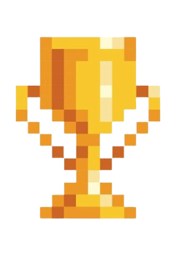

RANKING
É conhecido como pacotes de shaders , adicionam suporte a shaders ao Minecraft e adicionam vários buffers de desenho, mapa de sombras, mapa normal, mapa especular, sombras realistas, efeitos de iluminação, texturas 3D, ondas de água realistas e raios de sol, melhoria de nuvens, grama balançando e folhas. contém uma infinidade de shaderpacks reunidos, garantindo que o jogador encontre um redesenho de um objeto familiar toda vez que inicializar o jogo. Usando a cooperação de vários desenvolvedores de mods, Shaders Mod fornece alterações gráficas para sombras, clima, luz e desenho de mapas. Embora esses aspectos pareçam bastante simples, eles atribuem a maior parte da atmosfera visual do jogo. O clima de tempestade parecerá mais escuro e ameaçador, a luz do sol parecerá mais brilhante e mais calmante e o pôr do sol parecerá mais magnífico do que antes.
É um mod que todo artista que joga Minecraft provavelmente apreciará. Um dos principais atrativos deste mod é a grande variedade de blocos decorativos que ele adiciona ao jogo, permitindo muitas novas construções e projetos de construção. Mais opções são sempre boas para pessoas que não querem que seus prédios pareçam muito chatos e este é o mod perfeito para esses jogadores. Mas você não encontra esses novos designs especiais ocorrendo naturalmente no mundo. A única maneira de obtê-los é interagindo com blocos usando o novo item cinzel, que permite cortar designs exclusivos em faces de bloco.
É um gerador de mundo completamente personalizado contendo um enorme pacote de mais de 400 biomas originais com mais de 2.000 estruturas, incluindo árvores personalizadas, rochas, cavernas, masmorras, aldeias e muito mais. O conteúdo consiste em 4 partes principais: Biomas e terrenos personalizados Objetos personalizados (árvores, rochas, etc) Estruturas personalizadas (masmorras, ruínas, etc) Regras personalizadas de geração de mobs (em biomas selecionados)
É um bloco da sorte que escolhe aleatoriamente um dos mais de 100 resultados possíveis. Estes cobrem a maioria dos componentes do jogo, incluindo itens, baús, monstros, estruturas, poções, encantamentos, etc. Vários itens especiais - uma espada, arco e poção - podem ser encontrados ocasionalmente no bloco. Cada um deles produzirá resultados aleatórios além de suas funções padrão. O mod visa tornar o jogo mais divertido, adicionando um elemento de aleatoriedade e imprevisibilidade. Você mesmo pode personalizar todos os resultados ou baixar uma variedade de complementos da comunidade
Pixelmon adiciona muitos aspectos do Pokémon ao Minecraft, incluindo os próprios Pokémon, batalhas, trocas e criação. Pixelmon também inclui uma variedade de novos itens, incluindo itens proeminentes como Poké Balls e TMs, novos recursos como minério de bauxita e Apricorns e novos blocos decorativos como cadeiras e relógios. Para a maioria desses recursos, Pixelmon tenta combinar as mecânicas dos jogos Pokémon o mais próximo possível, incluindo mecânicas de batalha que combinam com as mecânicas dos jogos Pokémon da Geração 8. No entanto, alguns aspectos do Pixelmon são originais e divergem dos jogos, como uma mecânica de reprodução em que os Pokémon precisam de um ambiente adequado ao seu redor para se reproduzir.
O mod Mapa do Mundo da Xaero adiciona um mapa de tela cheia de escrita automática ao seu cliente Minecraft. Funciona como um mod separado, mas é muito melhor com o Minimap da Xaero. A razão pela qual está disponível separadamente é manter o Minimap da Xaero o mais leve possível. Este mod é principalmente do lado do cliente. A instalação no lado do servidor é opcional para alguns recursos adicionais, como identificação mundial.